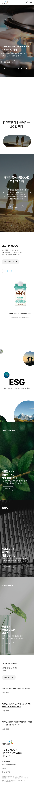
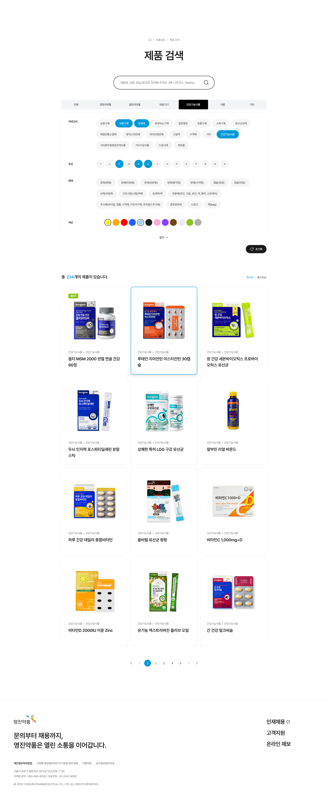
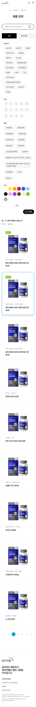

영진약품 웹사이트 프로젝트에서는 PL 역할로 참여하여 현업 및 타 팀과의 커뮤니케이션, 일정 관리, 이슈 조율을 중심으로 프로젝트를 운영하였습니다. 초기 단계부터 각 파트와 긴밀하게 협업하며
요구사항과 작업 방향을 빠르게 정리하여 QA 및 수정 사항을 최소화할 수 있도록 진행 흐름을 관리하였습니다.
또한 제품 검색 영역에서는 다양한 제품군과 검색 조건을 효율적으로 탐색할 수 있도록 필터 및 검색 UI를 구조화하였으며, 사용자가 원하는 정보를 빠르게 찾을 수 있도록 탐색 흐름과 인터랙션을 개선하였습니다.
또한 제품 검색 영역에서는 다양한 제품군과 검색 조건을 효율적으로 탐색할 수 있도록 필터 및 검색 UI를 구조화하였으며, 사용자가 원하는 정보를 빠르게 찾을 수 있도록 탐색 흐름과 인터랙션을 개선하였습니다.
-


-

